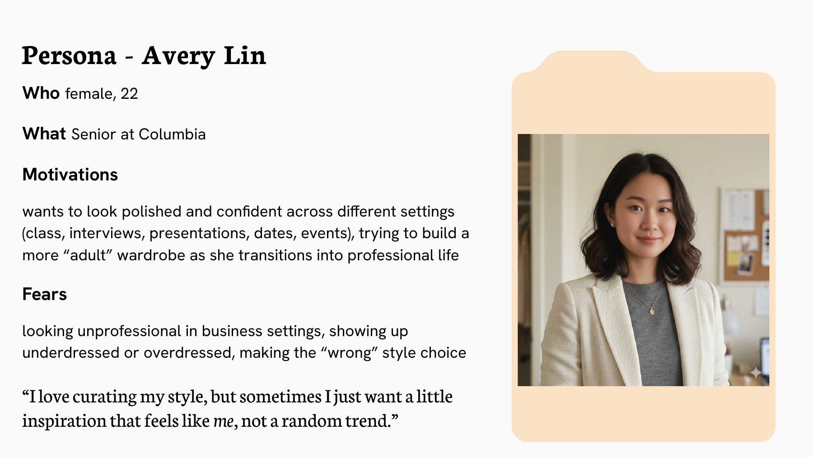
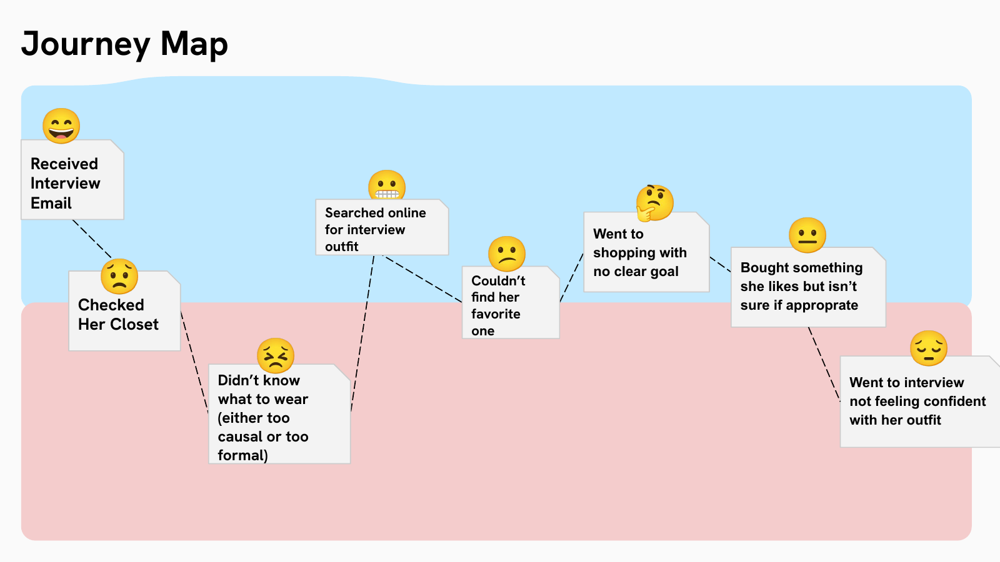
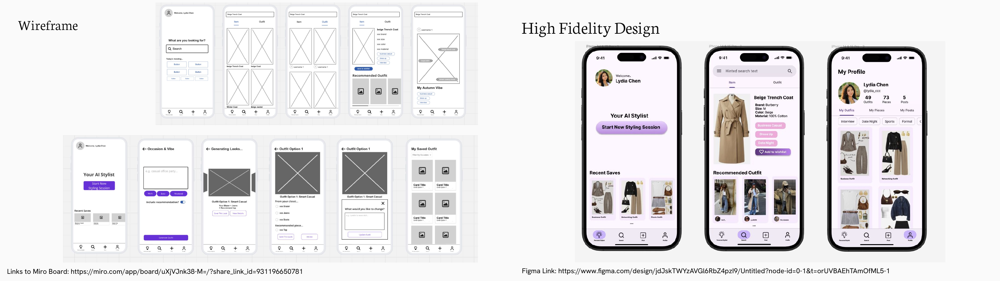
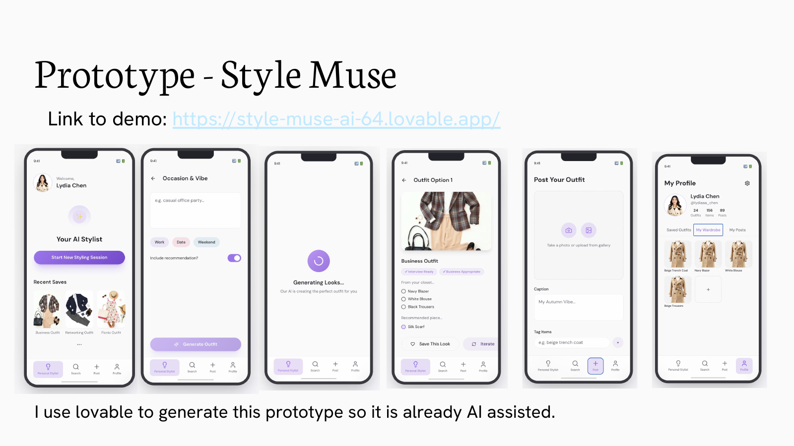

Skillset
背景 S
目标用户的灵感、衣柜和购物工具分散，面试等场景的穿搭决策缺少确定性。
目标 T
为20–40岁、有明确穿搭诉求的女性设计更连贯的决策体验。
行动 A
通过用户访谈和旅程图定位痛点；完成线框图与高保真Figma，设计Interview Ready标签，再通过Lovable迭代实现AI穿搭、搜索、数字衣柜和分享功能。
成果 R
交付从研究、设计到可交互原型的完整产品流程；原型可在线体验，尚无上线用户或转化数据。



